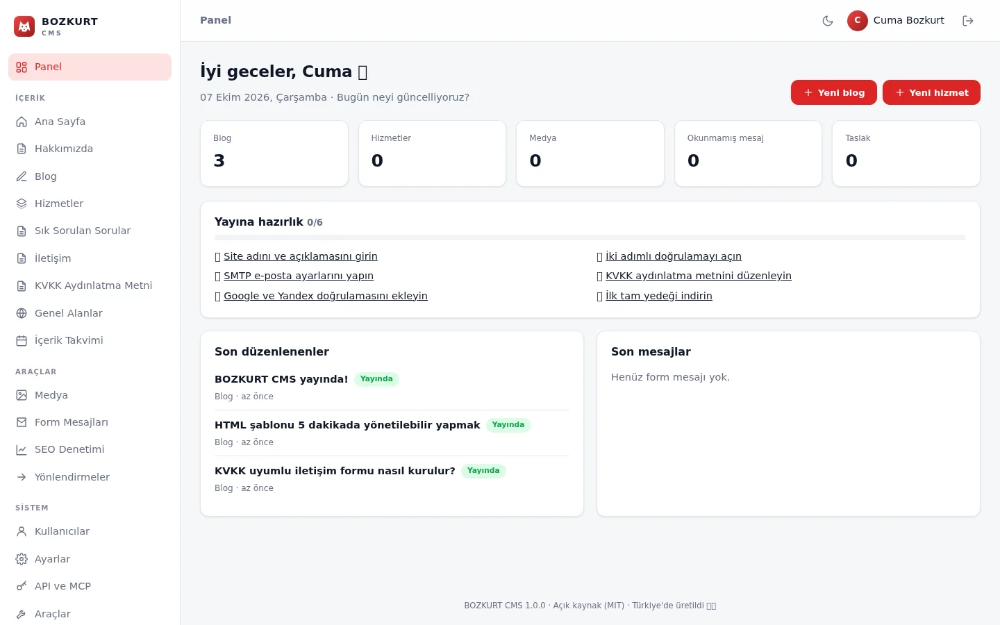
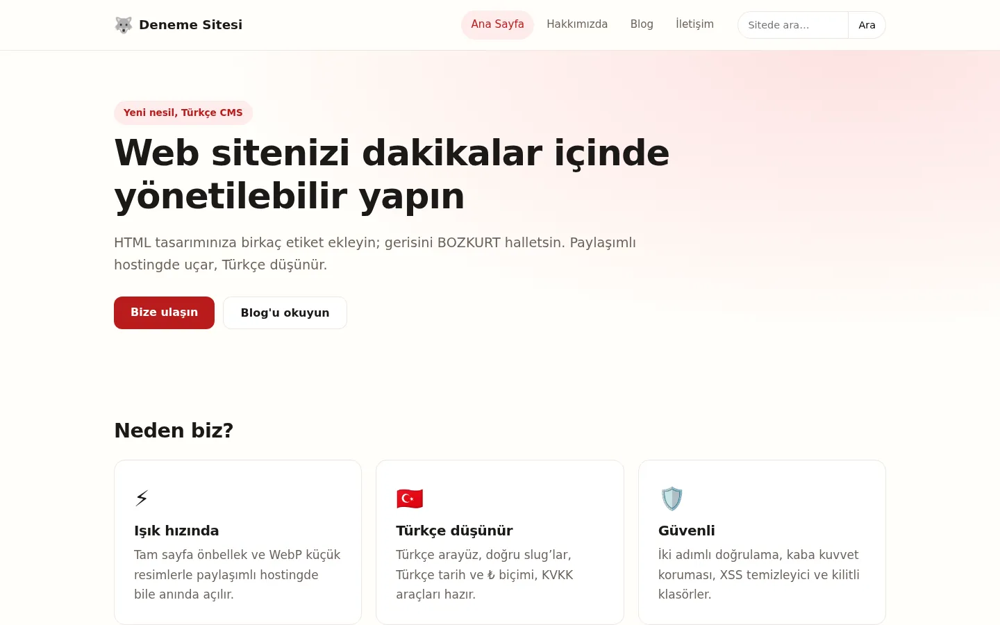
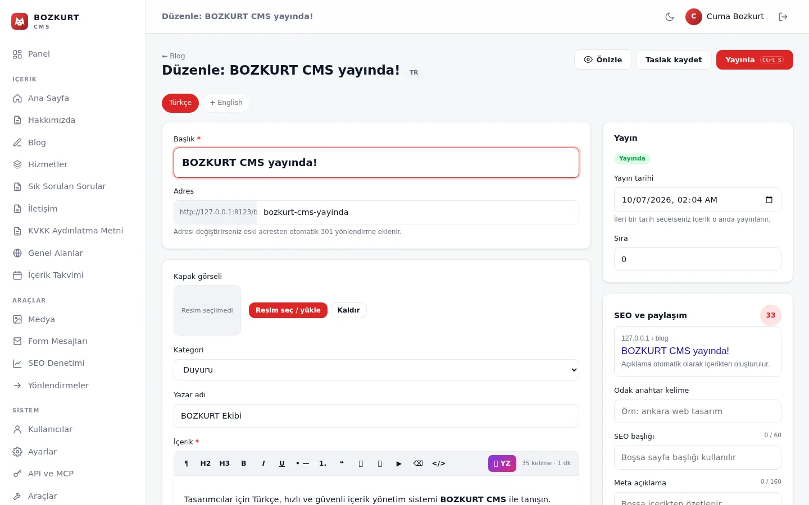
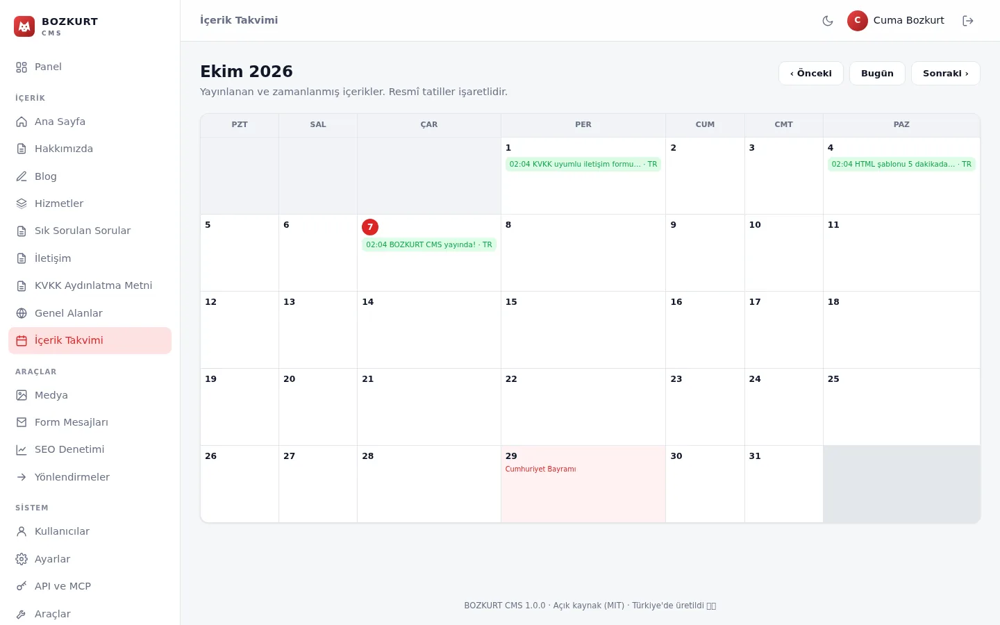
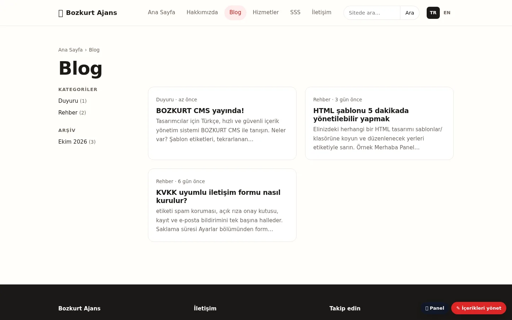
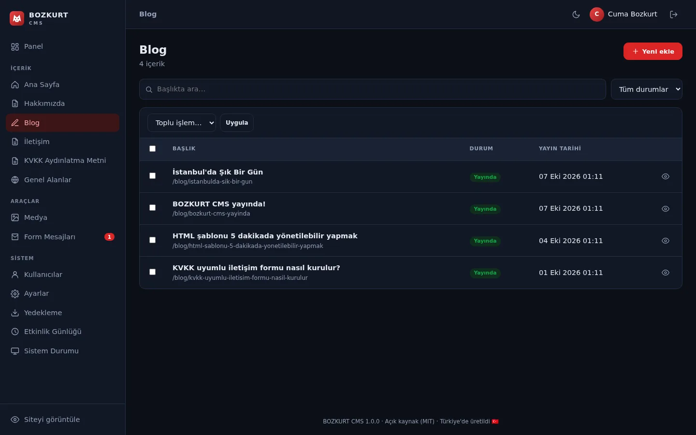
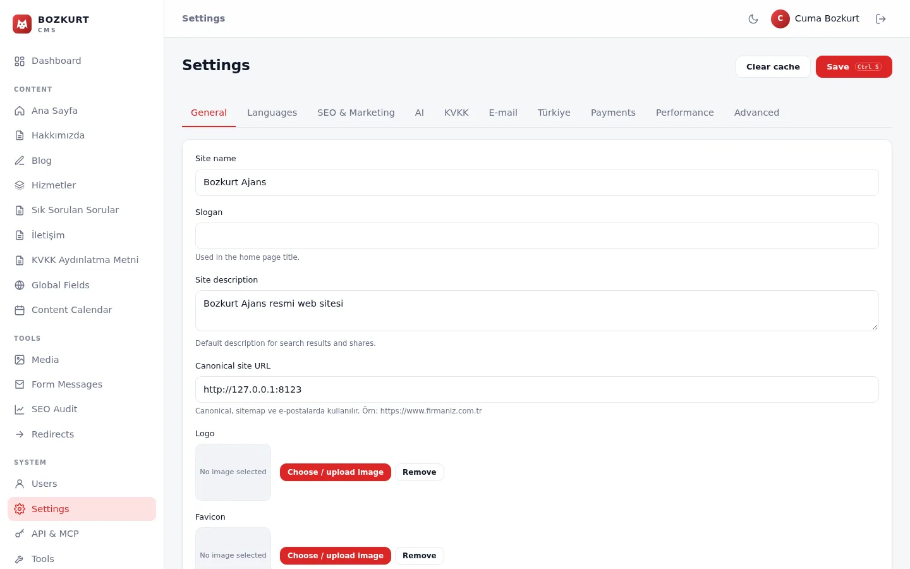

Tasarımcılar için etiketler
26 alan türü (zengin metin, blok düzenleyici, il, TCKN, VKN, IBAN…), 29 çıktı filtresi ve paneldeki şablon denetleyicisi.
Tasarımcılar için Türkçe öncelikli, hızlı ve güvenli içerik yönetimi. Composer yok, SQLite ya da MySQL, sıradan paylaşımlı hostingde çalışır; KVKK, ₺ fiyat, PayTR/iyzico ve yapay zekâ hazır.
<bz:sablon baslik="Hizmetler" coklu="evet" /> <bz:alan ad="gorsel" tur="resim" /> <bz:alan ad="fiyat" tur="fiyat" /> <h1>{{ baslik }}</h1> <p>{{ fiyat | tl }}</p>

CouchCMS’in popülerleştirdiği iş akışını üçüncü taraf bağımlılık olmadan yeniden kurar ve Türkiye’nin ihtiyaçlarını ilk günden tasarıma katar. CouchCMS kodu içermez.
<bz:alan>, <bz:liste>, <bz:eger> ile alanları tanımlayın./yonetim/’i açın, tek sayfalık kurulumu bitirin. SQLite ile sıfır yapılandırma.26 alan türü (zengin metin, blok düzenleyici, il, TCKN, VKN, IBAN…), 29 çıktı filtresi ve paneldeki şablon denetleyicisi.
Taslak, zamanlanmış yayın, önizleme, 25 revizyon geçmişi, ön yüzde satır içi düzenleme ve Türk tatilli içerik takvimi.
OpenAI uyumlu her API (OpenAI, Gemini, Groq, OpenRouter, yerel Ollama): düzeltme, özet, başlık, SEO metni, toplu çeviri, alt metin.
/en/, /de/, /ar/ önekleri, çeviri iş akışı, hreflang + x-default, RTL desteği.
Otomatik meta, Open Graph, JSON-LD, site haritası, 301 yöneticisi, site geneli SEO denetimi; llms.txt ve her sayfanın Markdown sürümü.
REST API (/api/v1), yapay zekâ istemcileri için /mcp MCP sunucusu, HMAC imzalı webhook’lar, WordPress içe aktarıcı.
KVKK çerez onayı, açık rıza, IP anonimleştirme, İYS; PayTR ve iyzico ödemeleri, siparişler, e-fatura CSV, Netgsm SMS, Yandex.
GA4, Meta Pixel ve Yandex Metrica yalnızca onaydan sonra yüklenir; form dönüşüm olayları, UTM yakalama, WhatsApp butonu.
TOTP 2FA, kilitleme, CSRF, CSP/HSTS, roller, etkinlik günlüğü, DOM tabanlı temizleyici, SSRF korumaları, SHA-256 doğrulamalı güncelleyici.
PHPStan seviye 5. Kaynak: proje README’si ve CI iş akışı.






Paneli yenileyin: “Hizmetler” kenar çubuğunda belirir; /hizmetler liste, /hizmetler/web-tasarim detay sayfası olur.
ZIP’i indirip açın ve tüm dosyaları public_html/ gibi web köküne yükleyin.
Hosting panelinizde PHP 8.1 veya üstünü seçin (8.3 önerilir).
https://alanadiniz.com/yonetim/ adresini açıp tek sayfalık kurulumu tamamlayın.
sablonlar/ altındaki HTML’e <bz:alan> etiketleri ekleyin; alanlar panelde belirsin.
Gereksinimler: PHP 8.1+ (pdo_sqlite ya da pdo_mysql, mbstring, fileinfo, dom); Apache/LiteSpeed, Nginx ya da IIS.
1) ZIP’i açın · 2) Tüm dosyaları web köküne yükleyin · 3) PHP 8.1+ seçin · 4) /yonetim/’i açıp kurulumu tamamlayın. SQLite kurulum gerektirmez; MySQL için önce veritabanı ve kullanıcı oluşturun.
Adım adım Hostinger rehberi (Türkçe): docs/HOSTINGER-KURULUM.md
git clone https://github.com/cumabozkurt/bozkurt-cms.git && cd bozkurt-cms
php -S localhost:8000 yonlendirici.php
# http://localhost:8000/yonetim/ adresini açıp kurulumu çalıştırınphp testler/birim.php php testler/duman.php php testler/kapsamli.php php testler/tarama.php
Belgeler: Şablon rehberi (TR) · Getting started (EN)
Statik HTML tasarımınızı müşteriye düzenlenebilir site olarak teslim edin; beyaz etiketle kendi markanızla.
PayTR/iyzico, sipariş, e-fatura CSV ve KVKK uyumu yerleşik.
Composer ya da SSH gerekmez; ZIP’i yükleyin, kurun, yayına alın.
<bz:alan> = field) ve İngilizce belgelerde açıklanır.ZIP’i indirin, hostinginize yükleyin ve bugün düzenlenebilir bir siteyle yayına çıkın.